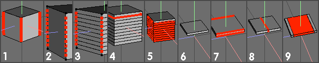
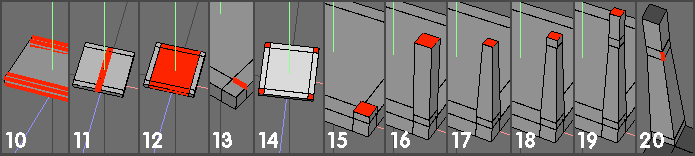
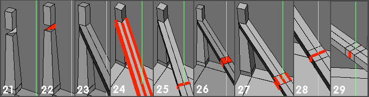
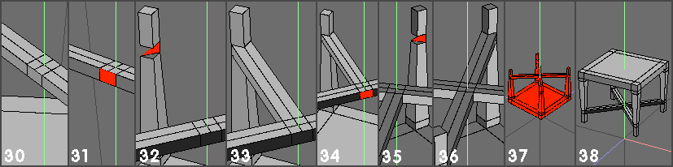

| BT1 -Making a table. main page Some general stuff. (Been said before, but repeated here for stand-alone reasons) RMB is a click with the right mouse button LMB ………………….left………………. MMB………………….middle…………... Edit | Camera mode options allow Wings to work with 1 or 2 button mice (default is 3 btn). It is also possible to configure the way the mouse is used for basic window navigational functions (Pan, Zoom, Tumble, Rotate etc). If you're new to all the options - maybe experiment to find one best suited to the way you work. Keyboard keys - eg C, D, E etc relate to the unshifted character - ie a press of that key alone - if the keystroke requires a modifier (Alt / Shft / Cntrl) it will be stated in the text (eg Shift D) Wings has context sensitive menus for each of its 4 selection modes (vert, edge, face and body). This means that Wings will only display valid tool options for that particular mode, once geometry has been selected. 'Greying out' of unavailable options is not used in Wings. To modify geometry the user must therefore: a) Select some geometry - by clicking on it with LMB, then - b) RMB to display the relevant menu - and make a choice. Although some tools are common to all 4 modes, these menus are different. If Smart Highlighting is activated (Edit | Preferences -> SH) then Wings will highlight (and thus allow you to select) verts, edges or faces (but not all at the same time) Once a v,e or f has been selected, wings 'locks' into that mode and will subsequently only allow the selection of further elements of the same type. Pressing spacebar will deselect all geometry, whatever the selection mode and will re-activate SH. Pressing the V,E, F or B keys will directly select vert, edge, face or body (selection) mode - as will LMB on one of the 4 pyramid icons at the top of the geometry window (same order - v, e, f, b) If you cannot see any pyramid icons, RMB on the green title bar at the top of the geometry window and LMB on 'Show Toolbar'. Ensure that View | Show Info Text has been activated (data readout in top left corner of geom window) and lastly - most important, regularly check the contents of the main info line along the bottom of the geometry window - this shows appropriate information about current options for the tool in use (as well as general navigational tips) - ignore this at your cost :) L,M and R on the info line refer to mouse buttons, not keys A navigation / camera tip: Select an element and press A (View | Aim) - Wings will then make the centre of the selection the new 'tumble' origin in the centre of the screen. You can then zoom in as required. The selection used can be anything from a single vert to whole objects. (If you tick Edit -> Prefs -> Adv. Prefs -> Use Highlight as Temp. Seln., you won't even need to actually 'select' a piece of geom. - just highlight it and press A) (Also check out View | Frame and View | Align to selection sometime) |
|  |
|  |
|  |
|  |
| 30).
RMB for edge menu and choose Dissolve (or just press Backspace).
This leaves 2 faces like that shown here - with 6 verts / edges on
each. (To check the number of edges around a (complex) face - select
the face and press E to switch to edge mode - the info readout will
display the number of edges (can use same method for verts) - quicker
than counting :) ) - remember that Face | Bridge only works with faces
having equal vert / edge counts. 31). Select one of these two faces just produced. 32). Select the other 'weird' face opposite the face selected in (31) 33). RMB for face menu and choose Bridge with LMB. Wings will join the 2 selected faces with new geometry (as before in (23)) 34-36). Repeat the Bridge operation for the last pair of faces (after selecting faces, press D - repeat last op, Bridge in this case). 37). You now have a simple table - but upside down. Choose body (object) mode, select the whole table. RMB for body menu and choose Rotate -> X (or Z) Drag to 180 deg (use shift to constrain to 15 deg 'steps') to turn the table correct way up. (Could also use the Flip command) 38). Finished model. Some more messing around possibilities :) Try using Object | Scale (or Face | Move) on the cube to make the same shape / size tabletop as that used here - maybe use the measure facility to check? Check what happens in (17) if you convert the face selections to edges or verts (and then scale uniform) Select all 9 faces on the table top (select large centre face, press + key) apply Face | Extrude -> Normal (say 0.5) and then use Face | Scale -> Uniform. Undo this and repeat using Face | Extrude Region Normal (then scale again) - note the difference. Try selecting the 2 large square faces on the tabletop (top and underside) and try Face | Inset followed by / or Face | Bridge. (Also Face | Bump on just the top square?) Select the 4 small faces (select one, press I (select similar)) around the top of each leg (16 total) and try Face | Bump - drag the mouse and press + / - keys to alter 'boundary edges' - check info line at bottom. Instead of just 'dragging' during a command (whether using constraints or not) try pressing the Tab key. Wings then displays a data entry box where you can enter precise amounts for your operations. How would you make the diagonal 'braces' thinner? What would you have to do to put a twist on the table legs? Experiment - you have 32 levels of undo - remember? :) |
| 1).
After opening Wings, RMB (anywhere in geometry window) to display the
primitives menu and select cube with LMB. Using edge mode (Smart
Highlighting (SH), press E or edge mode pyramid icon) select all 4
vertical edges of the cube - you can either do this one at a time,
tumbling the cube around to see the edges at the rear………. OR select one vertical edge and press G (select edge rinG) 2). RMB for the Edge menu, locate Cut (to cut selected edges into smaller pieces) and LMB on it to get further choices (2->5, 10). LMB on 10 (A shortcut for Edge | Cut is to just press a number key between 2 -> 0, which cuts into 2 to 10 pieces - try it if you want, remember Alt+Cntr+Z will undo your last action(s) - upto 32 times) 3). Leave the verts selected and RMB for vert menu. Choose Connect with LMB. Wings will join all the selected verts with new edges, as shown. (Connect shortcut key is C) 4). Deselect the verts (press spacebar) and select one of the (4) new edges just below the top and press L - doing this will select all the edges around the same Loop.(L is the shortcut for Select | EdgeLoop -> EdgeLoop) 5). RMB for edge menu and choose Loop Cut with LMB - this will effectively cut the cube into 2 objects along the chosen edgeloop. (for Loop Cut to work, it must be a closed loop - wings will tell you if it's not :) ) After this operation, one of the 2 portions will remain selected - if it is the (larger, lower) one shown, delete it (Body | Delete or just press the backspace key) If not, deselect the top piece (LMB on it, or use spacebar) select the lower piece, then as above. 6). The bit that's wanted. 7). Edge mode (SH / E or icon) and select the 4 edges parallel to the Z axis (blue one) - as in (1) either select them one at a time or just press G after selecting the first edge. 8). Press C to connect (or RMB for edge menu then LMB on Connect) - note that the Connect shortcut key, C connects selected verts or the mid points of selected edges. 9). With these new, midway edges still selected, RMB for edge menu and choose Bevel with LMB. Move the mouse to alter the size of the bevel 'land' - drag it until you get to D = 4 (readout top left corner - now you know why it was activated) Holding down the Shift key whilst you're dragging this tool will constrain changes to 1.0 unit steps and will make things easier. (Using Cntrl key constrains to 0.1 unit steps) Deselect faces after completing the bevel op. |
| 10
- 12). Repeat the same procedure as that just completed, but using the
other set of edges (parallel to the X (red) axis) to those just
adjusted - ie select edges, (select one, press G), connect them (press
C), bevel (4.0) the newly created edgeloop. 13). After this, you should have a shape like that shown. Select one (and only one) of the edges depicted and check the info readout (top left corner) - it should read 0.2 (units). (Wings will also display the distance between any 2 selected verts). 14). Deselect edge after measuring it and (in Face mode) select the 4 small corner faces. 15). RMB for face menu and choose Extrude -> Normal with LMB - drag mouse and stop when the 4 faces have been extruded by 0.1 unit (pressing Cntrl whilst dragging constrains 'steps' to 0.1 unit increments) - note that all 4 faces have been extruded. 16). Repeat this extrude operation, either by using the above procedure - OR - by pressing D (Edit | Repeat Last Action shortcut) - and drag the extrusion(s) to 1.0 units. (pressing Shift constrains to 1.0 unit 'steps') 17). Keeping the extrusion end faces selected, RMB for face menu and choose Scale -> Uniform with LMB. Drag the mouse to get 60% (eyeball info, top left and use Cntrl to constrain to 10% 'steps') Note how each face scales about its own centre - not a centre in the middle of all 4 selected faces. 18). RMB for face menu and choose Extrude -> Normal (again) and drag to 0.1 units (Cntrl ?). 19). Repeat the Face | Extrude operation (press D to repeat last op) and drag to get a 0.3 unit extrusion. You should now have an object with 4 extrusions as shown here. Deselect faces (spacebar) 20). Select the same edge as the one shown on each of the 4 extrusions (total of 4 edges selected) |
| 21).
RMB for edge menu, choose Dissolve with LMB (or just press
Backspace). All 4 selected edges will disappear - this leaves a
strange looking (but valid) face with 6 verts / edges - this is ok. 22). In Face mode, select one of these 'faces', then select the equivalent face on the extrusion diagonally opposite - should now have 2 of these faces selected. 23). RMB for face menu and choose Bridge with LMB. Wings will now join the 2 selected faces with new geometry. (This command will only work if the 2 faces to be bridged have exactly the same number of verts / edges as each other. 'Tunnels' can also be cut through objects if the 2 faces are on opposite sides of the object. Faces do not have to be the same shape.) 24). Select all 6 of the edges on this new piece of geometry (select one, press G). 25). RMB for edge menu and choose Connect (or just press C). Wings will create a series of new edges by connecting the mid points of all the selected edges. 26). RMB for edge menu, choose Bevel and drag to 0.4 units. 27). Deselect the new faces (spacebar) and select the 6 new edges formed by the bevel operation. 28). RMB for edge menu and choose Connect with LMB. 29). Select the edge shown, together with the corresponding (similar) one on the other side of the bridged 'bar'. |
| Part 1 - making the table top |
| Part2 - completing the table top and making the legs. |
| Part 3 - preparing the legs for cross-braces and starting the cross braces. |
| Part 4 - completing the cross braces (and table) |